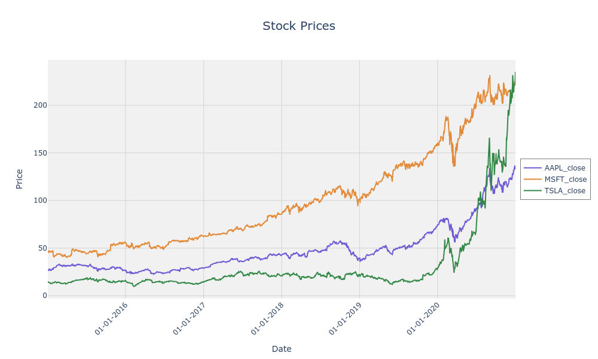
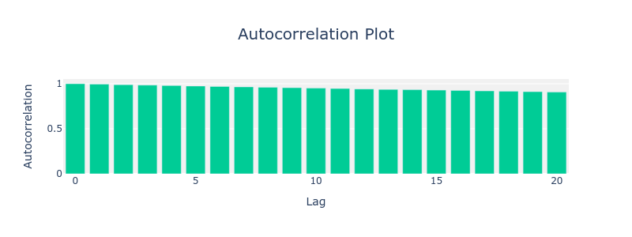
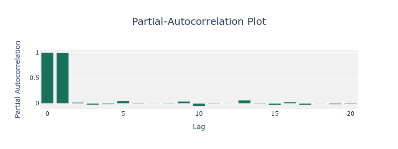

importplutus_pairtrading.data_acquisitionsasdacqimportplutus_pairtrading.data_generationsasdgenimportplutus_pairtrading.data_visualizationsasdviz# Fetch stock data for multiple securitiesAAPL_df=dacq.fetch_yahoo_finance_data("AAPL",start_date="2015-01-01",end_date="2021-01-01")MSFT_df=dacq.fetch_yahoo_finance_data("MSFT",start_date="2015-01-01",end_date="2021-01-01")GOOG_df=dacq.fetch_yahoo_finance_data("GOOG",start_date="2015-01-01",end_date="2021-01-01")TSLA_df=dacq.fetch_yahoo_finance_data("TSLA",start_date="2015-01-01",end_date="2021-01-01")# Combine the data into a single DataFramestock_df=dacq.combine_dataframes([AAPL_df,MSFT_df,GOOG_df,TSLA_df])# Perform pair identificationpairs_df=dgen.pairs_identification(data=stock_df,stationarity_method="ADF",cointegration_method="phillips-ouliaris",stationarity_significance_level=0.05,coint_significance_level=0.05,)# Display the identified pairsprint(pairs_df)
📈 PLUTUS Stationarity Tests
PLUTUS provides a comprehensive suite of statistical tests to assess the properties of financial time-series data, ensuring robust pair-trading strategies. These tests help evaluate stationarity:
🧪 Augmented Dickey-Fuller (ADF) evaluates whether a series is stationary or contains a unit root.
📉 Phillips-Perron (PP) is a non-parametric test for stationarity.
📊Kwiatkowski-Phillips-Schmidt-Shin (KPSS) checks if a series is stationary around a deterministic trend.
PLUTUS provides a comprehensive suite of statistical tests to assess the properties of financial time-series data, ensuring robust pair-trading strategies. These tests help evaluate integration order, and cointegration between time-series. Available tests are:
⚖️ Engle-Granger performs test for cointegration between two time-series.
🔍 Phillips-Ouliaris is another method to assess cointegration between two series.
🔄 Johansen evaluates cointegration among multiple time-series.
These tests are critical for identifying relationships between time-series and determining their suitability for pair-trading strategies.
importplutus_pairtrading.data_acquisitionsasdacqimportplutus_pairtrading.testsaststs# Fetch stock data for multiple securitiesTSLA_df=dacq.fetch_yahoo_finance_data("TSLA",start_date="2020-01-01",end_date="2024-12-30")GE_df=dacq.fetch_yahoo_finance_data("GE",start_date="2020-01-01",end_date="2024-12-30")# Combine the historical data of the stocksstock_df=dacq.combine_dataframes([TSLA_df,GE_df])# Perform Engle-Granger Testresult=tsts.engle_granger_cointegration_test(data=stock_df,securities=["TSLA_close","GE_close"],trend="constant",significance_level=0.05,)print(result)
importplutus_pairtrading.data_acquisitionsasdacqimportplutus_pairtrading.testsaststs# Fetch stock data for multiple securitiesTSLA_df=dacq.fetch_yahoo_finance_data("TSLA",start_date="2020-01-01",end_date="2024-12-30")GE_df=dacq.fetch_yahoo_finance_data("GE",start_date="2020-01-01",end_date="2024-12-30")# Combine the historical data of the stocksstock_df=dacq.combine_dataframes([TSLA_df,GE_df])# Perform Engle-Granger Testresult=tsts.phillips_ouliaris_cointegration_test(data=stock_df,securities=["TSLA_close","GE_close"],trend="constant",significance_level=0.05,)print(result)
importplutus_pairtrading.data_acquisitionsasdacqimportplutus_pairtrading.testsaststs# Fetch stock data for multiple securitiesTSLA_df=dacq.fetch_yahoo_finance_data("TSLA",start_date="2020-01-01",end_date="2024-12-30")GE_df=dacq.fetch_yahoo_finance_data("GE",start_date="2020-01-01",end_date="2024-12-30")# Combine the historical data of the stocksstock_df=dacq.combine_dataframes([TSLA_df,GE_df])# Perform Engle-Granger Testresult=tsts.phillips_ouliaris_cointegration_test(data=stock_df,securities=["TSLA_close","GE_close"],trend="constant",significance_level=0.05,)print(result)
{"Statistics and Critical Values":[{"Null Hypothesis":"r<=0","Statistic":20.9772,"Critical Value (95%)":29.7961},{"Null Hypothesis":"r<=1","Statistic":6.7329,"Critical Value (95%)":15.4943},{"Null Hypothesis":"r<=2","Statistic":0.0030,"Critical Value (95%)":3.8415}],"Eigenvalues":[0.0112948,0.0053524,0.0000024],"Eigenvectors":[[0.0187234,0.0059437,-0.0072621],[0.0370668,-0.0278356,-0.0166753],[-0.0653901,0.0167287,0.0012695]],"Trend":"constant","#Cointegrated Vectors":0,"Spread":{"2020-01-02":-2.1689,"2020-01-03":-2.0979,"2020-01-06":-2.0945,"2020-01-07":-2.0663,"2020-01-08":-2.1362,"...":"...","2024-12-24":-1.8717,"2024-12-26":-2.0534,"2024-12-27":-2.3266}}
📥 PLUTUS Data Acquisition
This section highlights how to acquire data using the PLUTUS package:
You can fetch historical financial data for multiple tickers using the fetch_yahoo_finance_data function.
importplutus_pairtrading.data_acquisitionsasdacq# Fetch stock data for AAPL, MSFT, and TSLAAAPL_df=dacq.fetch_yahoo_finance_data("AAPL",start_date="2015-01-01",end_date="2021-01-01",)MSFT_df=dacq.fetch_yahoo_finance_data("MSFT",start_date="2015-01-01",end_date="2021-01-01")TSLA_df=dacq.fetch_yahoo_finance_data("TSLA",start_date="2015-01-01",end_date="2021-01-01")# Combine the data into a single DataFramestock_df=dacq.combine_dataframes([AAPL_df,MSFT_df,TSLA_df])# Save the data to CSV filesdacq.store_data_as_csv(AAPL_df,"data/tickers/AAPL.csv",)dacq.store_data_as_csv(MSFT_df,"data/tickers/MSFT.csv")dacq.store_data_as_csv(TSLA_df,"data/tickers/TSLA.csv")combined_df=dacq.read_and_combine_ticker_files(directory_path="data/tickers",tickers=["AAPL","MSFT","TSLA"],date_column="date",column_suffix=["close","close_adj"],join_type="inner",)
date
AAPL_close_adj
AAPL_close
MSFT_close_adj
MSFT_close
TSLA_close_adj
TSLA_close
2015-01-02
24.347172
27.332500
40.232841
46.759998
14.620667
14.620667
2015-01-05
23.661276
26.562500
39.862869
46.330002
14.006000
14.006000
2015-01-06
23.663506
26.565001
39.277802
45.650002
14.085333
14.085333
2015-01-07
23.995310
26.937500
39.776840
46.230000
14.063333
14.063333
2015-01-08
24.917269
27.972500
40.946987
47.590000
14.041333
14.041333

📊 PLUTUS Data Visualization
PLUTUS has data_visualizations module. Here’s how each plot for pair-trading looks like:


Here is the code to plot autocorrelation and partial-autocorrelation functions for a security:
Thank you for exploring our demo!🙌 We hope this example has given you a brief understanding of how to utilize our package and integrate its features into your projects. Whether you're just getting started or diving deeper, our goal is to make your experience as seamless and productive as possible.